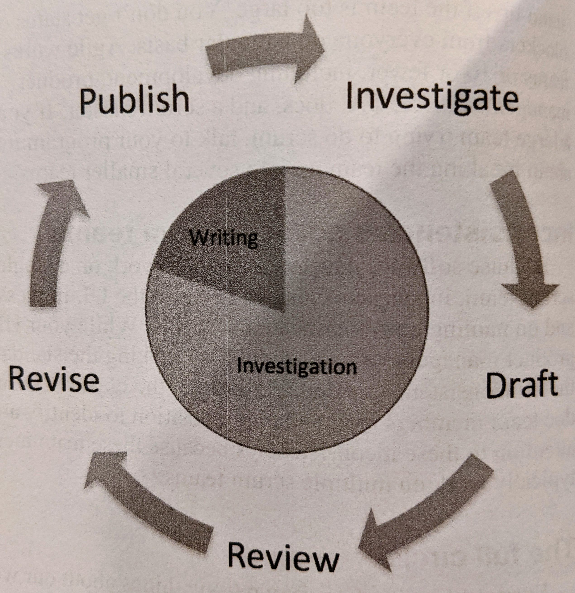

The Product is Docs¶
My general impression of the book so far is that it offers a lot of specific information on a variety of useful topics. However, like the docs it talks about, it is not linear.
comprehensive vs. relevant seems like an enlightening guiding principal for writing to different audiences. -> Where to put the needle for which audience?
regular customer feedback loop. How to generate this? What about ‘is this page useful? comment here.’
waterfall - linear approach to project management. (linear is a much better name) SME - subject matter experts
How to avoid always trailing? Ask people to write some documentation before they start work on a new feature?
Ideas:
What are the software’s core principals? What is the sell to users for why should they use the software and what principles they are adopting when they do.
What is considered successful documentation?
Documentation value, create and track consistent naming conventions.
{kind=link}
Audience
Identify Users’:
goals
problems they want to solve
decisions they need to make
things they want to build
Audience Types versus Personas
A persona is a specific instance of an audience type.
Customer Feedback
Community
GitHub already allows users to have discussions and aid each other.
Documentation Decisions
What is your documentation ethos? In this case, I would say that contributors should write the documentation in a way that would be clear to their group leader. Technical and in-house jargon is OK. I think of it as my place to figure out how to relate this to the more general audience. Also a main consideration, is how much time and effort it would take to write for a different audience.
Learning Objectives